WINDOWS
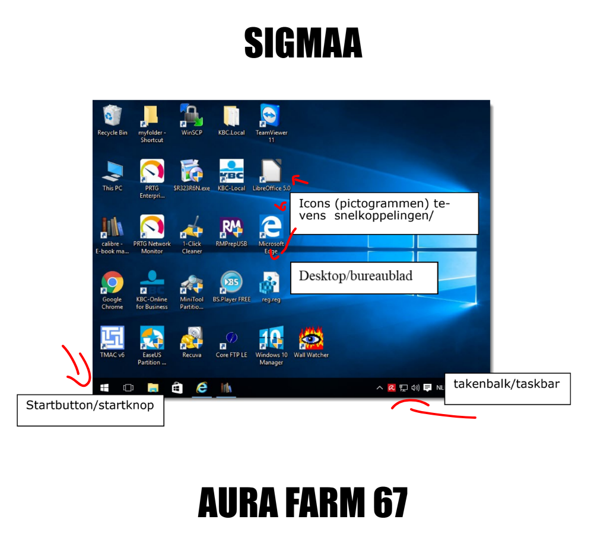
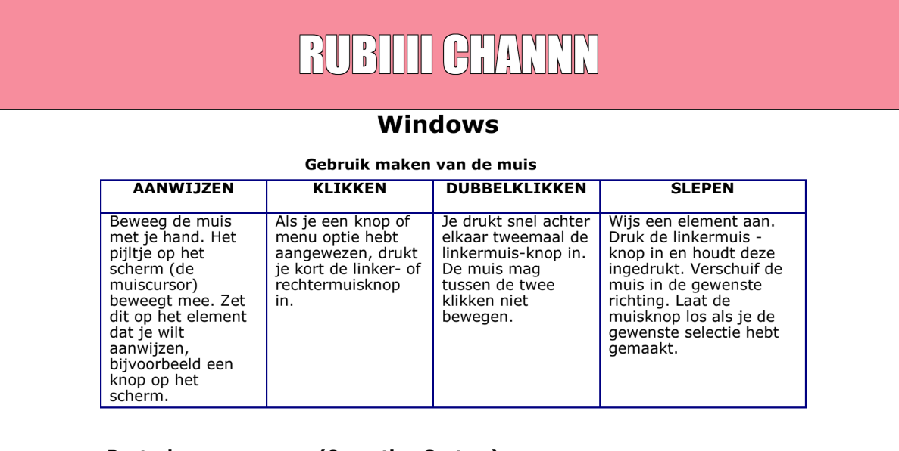
Besturingsprogramma (Operating System)
Een besturingssysteem (OS) helpt de computer werken en zorgt dat jij hem kunt gebruiken. Het beheert de computer en vormt de verbinding tussen jou en de hardware.
Vier belangrijke functies van een Besturingsprogramma:
- Laat de computer met de hardware praten
- Maakt communicatie mogelijk tussen jou en de computer
- Laat je programma's gebruiken
- Data manipulatie
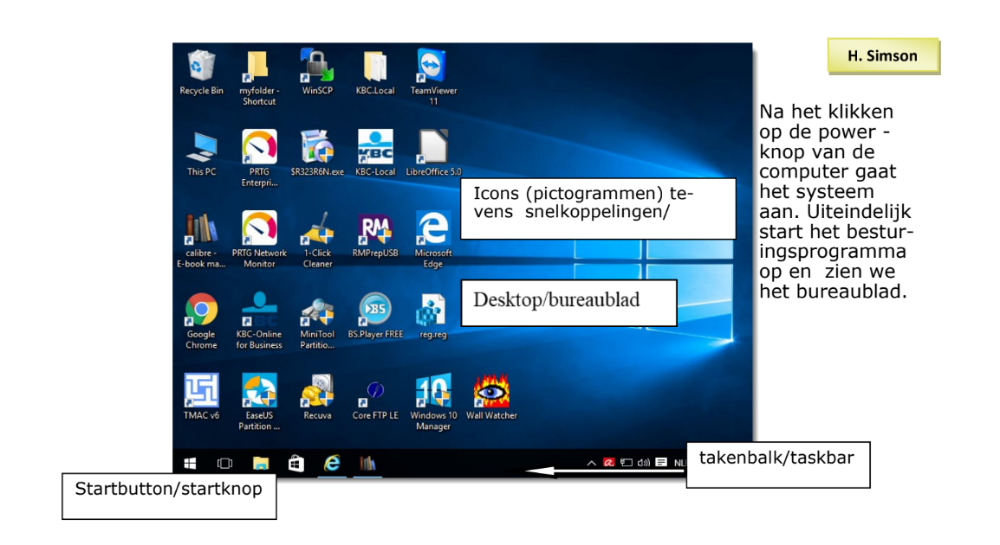
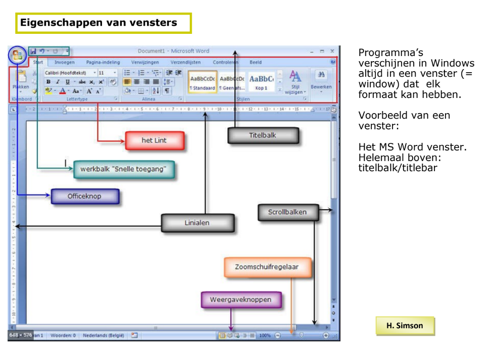
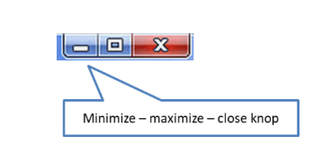
Werken met vensters
- Minimaliseren: Klik op de streep-knop (–) om het venster klein te maken. Het verdwijnt van het scherm, maar je ziet het nog op de taakbalk.
- Maximaliseren: Klik op het vierkantje om het venster groter te maken, zodat het heel je scherm vult.
- Sluiten: Klik op het kruisje (X) om het venster helemaal te sluiten.
- Grootte aanpassen: Zet je muis op de rand van het venster. Je ziet dan een pijltje. Klik en houd vast, en beweeg je muis om het venster groter of kleiner te maken.
- Venster verplaatsen: Klik op de bovenkant (titelbalk), houd vast en sleep het venster naar een andere plek op je scherm.
Multitasking: Je kunt meerdere vensters tegelijk open hebben op je computer. Zo kun je snel wisselen tussen programma’s. Dit heet multitasking. Het venster dat je gebruikt is actief en staat vooraan. De titelbalk is dan duidelijker van kleur. Klik op de taakbalk of in het venster om te wisselen.
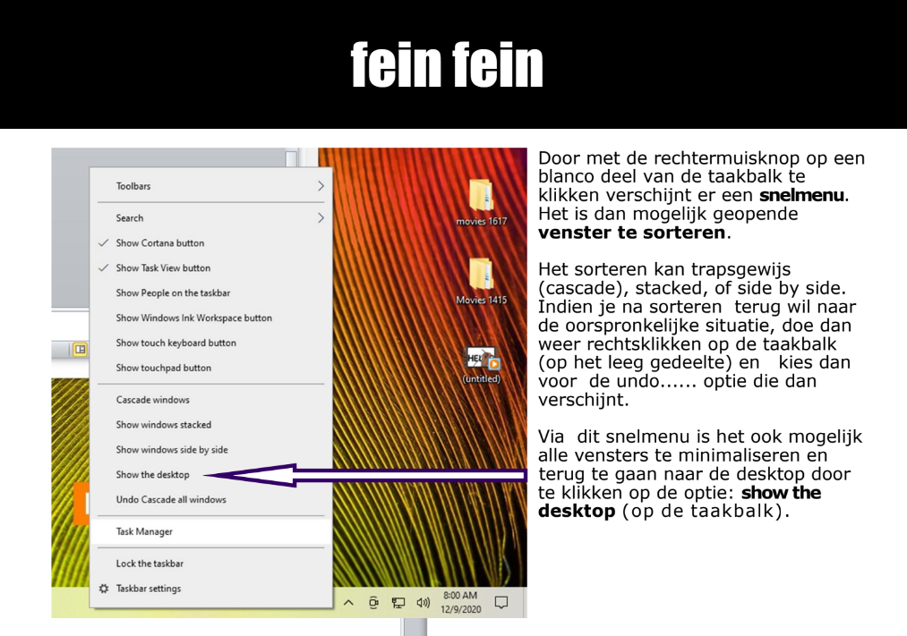
WINDOWS VERKENNER (FILE EXPLORER)
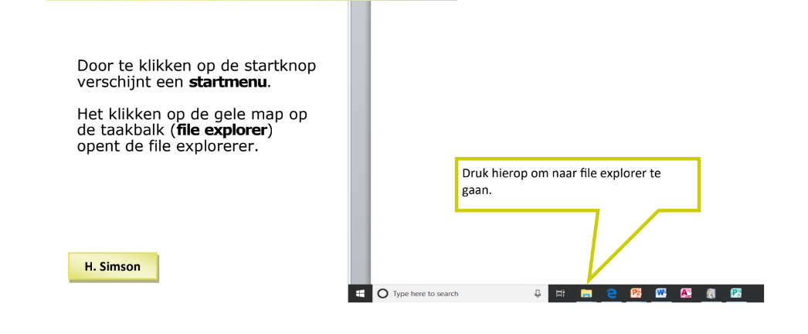
File Explorer: Met File Explorer (Verkenner) kun je mappen en bestanden op je computer bekijken. Klik op de gele map in de taakbalk of typ “File Explorer” bij zoeken. In Verkenner kun je bestanden en mappen beheren.
Wat zijn bestanden? Bestanden zijn dingen die op je computer staan, zoals programma’s of documenten.
– Programma’s hebben vaak .exe achter de naam, bijvoorbeeld WinWord.exe voor Word.
– Documenten hebben andere extensies: Word (.docx), Excel (.xlsx), PowerPoint (.pptx), Afbeeldingen (.jpg, .bmp).
Je kunt aan de extensie zien wat voor soort bestand het is.
Mappen: Om je bestanden netjes te houden, bewaar je ze in mappen. In een map kunnen ook andere mappen zitten. Dat heet een submap.
Uitleg van het Explorer-venster:
– Links zie je de mappen (folders).
– Rechts zie je wat er in de gekozen map zit.
Zo kun je makkelijk bestanden van de ene map naar de andere slepen of kopiëren.
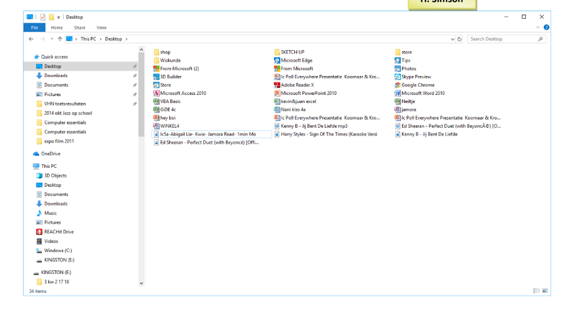
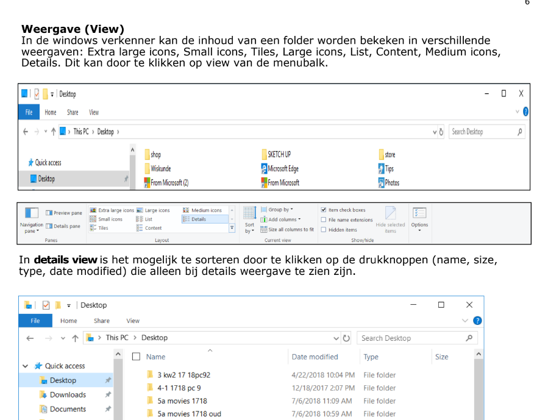
Bestanden of mappen selecteren:
- Eén bestand of map kiezen: Klik erop met je muis.
- Meerdere achter elkaar: Klik op het eerste, houd de Shift-toets ingedrukt, en klik op het laatste. Laat de toets los.
- Losse bestanden kiezen: Klik op het eerste, houd Ctrl ingedrukt, en klik op de andere die je ook wilt. Laat Ctrl los.
- Alles tegelijk selecteren: Druk op Ctrl + A of kies "Select all" (Alles selecteren).
Bestanden of mappen verplaatsen:
- Open de map waar de bestanden staan (aan de linkerkant).
- Selecteer wat je wil verplaatsen (rechts).
- Rechtsklik en kies Cut (Knippen).
- Ga naar de map waar het naartoe moet.
- Rechtsklik daar en kies Paste (Plakken).
Bestanden of mappen kopiëren: Werkt hetzelfde als verplaatsen, alleen kies je Copy (Kopiëren) in plaats van Cut.
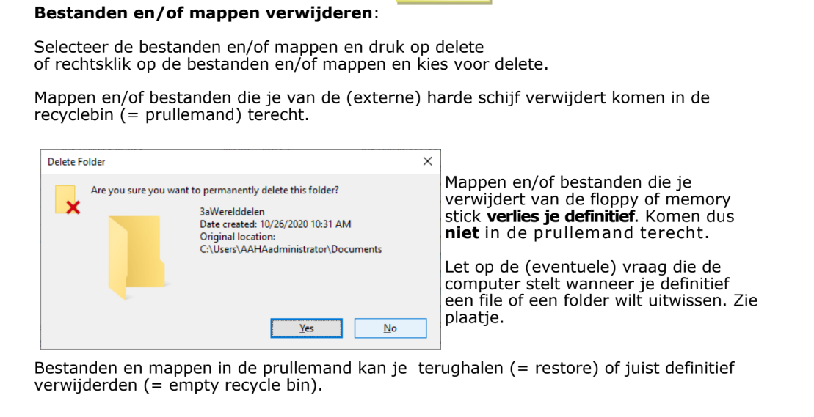
Verschil tussen Save en Save As
Wanneer je voor het eerst iets opslaat, maakt het niet uit of je Save of Save As gebruikt. Maar als je al iets had opgeslagen en je maakt veranderingen, dan is het belangrijk wat je kiest:
- Save: Dit vervangt je oude versie met de nieuwe. Je hebt dan alleen nog de nieuwste versie.
- Save As: Hiermee maak je een nieuw bestand met een andere naam of op een andere plek. Zo bewaar je de oude versie én de nieuwe versie.
Voorbeeld:
Je hebt een verslag geschreven in Google Docs en je drukt op Save.
Later zet je een plaatje erin en je drukt weer op Save. Dan wordt de oude versie van je verslag replaced door de nieuwe versie mét plaatje.
dus die oude versie zonder plaatje heb je ni meer.
Als je het oude verslag (zonder plaatje) ook wilt bewaren, kies je Save As en geef je het een nieuwe naam, bijvoorbeeld verslag_met_plaatje.docx. Dan heb je twee versies van je werk. 1 zonder plaatje (die oude) en 1 met plaatje (die nieuwe).
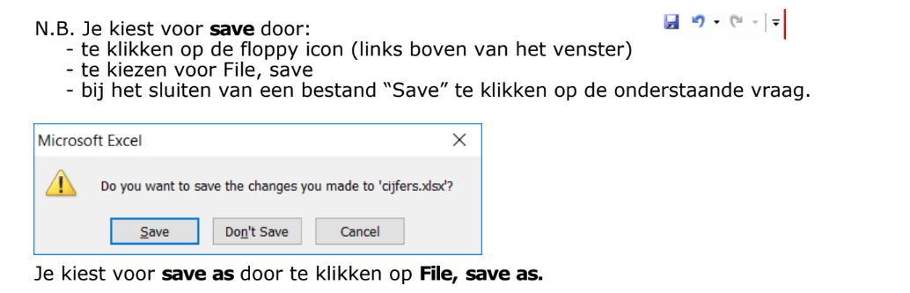
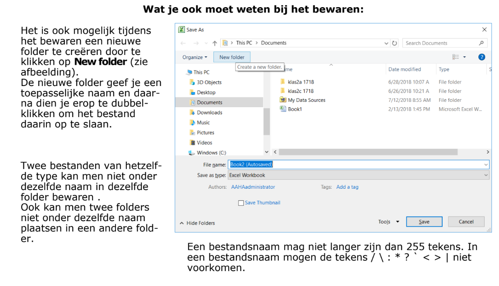
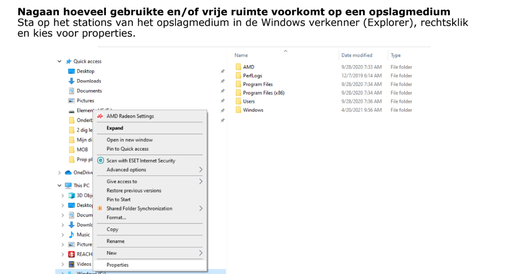
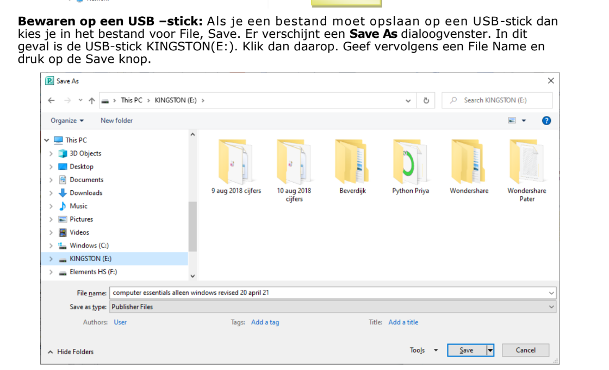